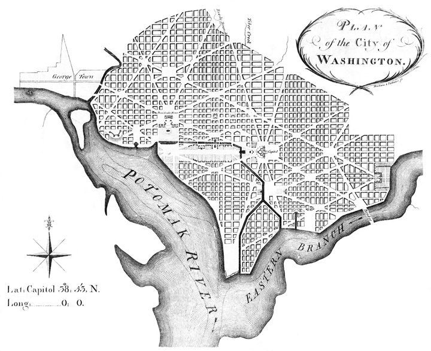
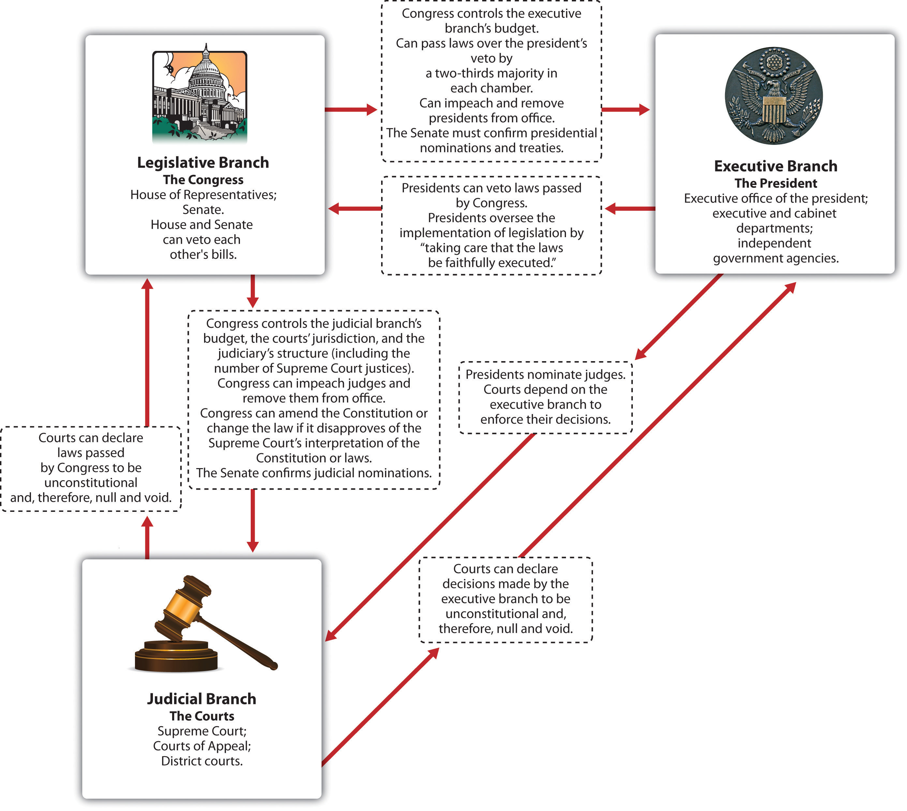

After reading this section, you should be able to answer the following questions:
While the Constitution established a national government that did not rely on the support of the states, it limited the federal government’s powers by listing (“enumerating”) them. This practice of federalism (as we explain in detail in Chapter 3 "Federalism") means that some policy areas are exclusive to the federal government, some are exclusive to the states, and others are shared between the two levels.
Federalism aside, three key principles are the crux of the Constitution: separation of powers, checks and balances, and bicameralism.
Separation of powersThe doctrine whereby legislative, executive, and judicial powers are placed in distinct, at least partially autonomous, institutions. is the allocation of three domains of governmental action—law making, law execution, and law adjudication—into three distinct branches of government: the legislature, the executive, and the judiciary. Each branch is assigned specific powers that only it can wield (see Table 2.1 "The Separation of Powers and Bicameralism as Originally Established in the Constitution").
Table 2.1 The Separation of Powers and Bicameralism as Originally Established in the Constitution
| Branch of Government | Term | How Selected | Distinct Powers |
|---|---|---|---|
| Legislative | |||
| House of Representatives | 2 years | Popular vote | Initiate revenue legislation; bring articles of impeachment |
| Senate | 6 years; 3 classes staggered | Election by state legislatures | Confirm executive appointments; confirm treaties; try impeachments |
| Executive | |||
| President | 4 years | Electoral College | Commander-in-chief; nominate executive officers and Supreme Court justices; veto; convene both houses of Congress; issue reprieves and pardons |
| Judicial | |||
| Supreme Court | Life (during good behavior) | Presidential appointment and Senate confirmation (stated more or less directly in Federalist No. 78) | Judicial review (implicitly in Constitution but stated more or less directly in Federalist No. 78) |
Figure 2.6
In perhaps the most abiding indicator of the separation of powers, Pierre L’Enfant’s plan of Washington, DC, placed the President’s House and the Capitol at opposite ends of Pennsylvania Avenue. The plan notes the importance of the two branches being both geographically and politically distinct.
This separation is in the Constitution itself, which divides powers and responsibilities of each branch in three distinct articles: Article I for the legislature, Article II for the executive, and Article III for the judiciary.
At the same time, each branch lacks full control over all the powers allotted to it. Political scientist Richard Neustadt put it memorably: “The Constitutional Convention of 1787 is supposed to have created a government of ‘separated powers.’ It did nothing of the sort. Rather, it created a government of separated institutions sharing powers.”Richard E. Neustadt, Presidential Power (New York: Wiley, 1960), 33. Of course, whether the founders intended this outcome is still open to dispute. No branch can act effectively without the cooperation—or passive consent—of the other two.
Most governmental powers are shared among the various branches in a system of checks and balancesThe Constitution’s approach whereby every branch is equipped with powers at least partially countervailing those of the other two branches., whereby each branch has ways to respond to, and if necessary, block the actions of the others. For example, only Congress can pass a law. But the president can veto it. Supreme Court justices can declare an act of Congress unconstitutional through judicial reviewThe power of the Supreme Court to render acts of Congress or decisions of the executive null and void on the basis that they violate the Constitution.. Figure 2.7 "Checks and Balances" shows the various checks and balances between the three branches.
Figure 2.7 Checks and Balances
Source: Adapted from George C. Edwards, Martin P. Wattenberg, and Robert L. Lineberry, Government in America: People, Politics, and Policy (White Plains, NY: Pearson Longman, 2011), 46.
The logic of checks and balances echoes Madison’s skeptical view of human nature. In Federalist No. 10 he contends that all individuals, even officials, follow their own selfish interests. Expanding on this point in Federalist No. 51, he claimed that officeholders in the three branches would seek influence and defend the powers of their respective branches. Therefore, he wrote, the Constitution provides “to those who administer each department the necessary constitutional means and personal motives to resist encroachments of the others.”
Government is made yet more complex by splitting the legislature into two separate and distinct chambers—the House of Representatives and the Senate. Such bicameralismThe practice of having two separate chambers within the legislature; in the Constitution, this means that Congress is made up of a House of Representatives and a Senate. was common in state legislatures. One chamber was supposed to provide a close link to the people, the other to add wisdom.Gordon S. Wood, The Creation of the American Republic (Chapel Hill: University of North Carolina Press, 1969), chap. 6. The Constitution makes the two chambers of Congress roughly equal in power, embedding checks and balances inside the legislative branch itself.
Bicameralism recalls the founders’ doubts about majority rule. To check the House, directly elected by the people, they created a Senate. Senators, with six-year terms and election by state legislatures, were expected to work slowly with a longer-range understanding of problems and to manage popular passions. A story, possibly fanciful, depicts the logic: Thomas Jefferson, back from France, sits down for coffee with Washington. Jefferson inquires why Congress will have two chambers. Washington asks Jefferson, “Why did you pour that coffee into your saucer?” Jefferson replies, “To cool it,” following the custom of the time. Washington concludes, “Even so, we pour legislation into the senatorial saucer to cool it.”This version comes from Richard F. Fenno Jr., The United States Senate: A Bicameral Perspective (Washington, DC: American Enterprise Institute, 1982), 5.
The US political system is designed to prevent quick agreement within the legislature and between the branches. Senators, representatives, presidents, and Supreme Court justices have varying terms of offices, distinctive means of selection, and different constituencies. Prospects for disagreement and conflict are high. Accomplishing any goal requires navigating a complex obstacle course. At any point in the process, action can be stopped. Maintaining the status quo is more likely than enacting significant changes. Exceptions occur in response to dire situations such as a financial crisis or external attacks.
The text of the Constitution consists of a preamble and seven sections known as “articles.” The preamble is the opening rhetorical flourish. Its first words—“We the People of the United States”—rebuke the “We the States” mentality of the Articles of Confederation. The preamble lists reasons for establishing a national government.
The first three articles set up the branches of government. We briefly summarize them here, leaving the details of the powers and responsibilities given to these branches to specific chapters.
Article I establishes a legislature that the founders believed would make up the heart of the new government. By specifying many domains in which Congress is allowed to act, Article I also lays out the powers of the national government that we examine in Chapter 3 "Federalism".
Article II takes up the cumbersome process of assembling an Electoral College and electing a president and a vice president—a process that was later modified by the Twelfth Amendment. The presidential duties listed here focus on war and management of the executive branch. The president’s powers are far fewer than those enumerated for Congress.
The Constitutional Convention punted decisions on the structure of the judiciary below the Supreme Court to the first Congress to decide. Article III states that judges of all federal courts hold office for life “during good Behaviour.” It authorizes the Supreme Court to decide all cases arising under federal law and in disputes involving states. Judicial review, the central power of the Supreme Court, is not mentioned. Asserted in the 1804 case of Marbury v. Madison (discussed in Chapter 15 "The Courts", Section 15.2 "Power of the US Supreme Court"), it is the ability of the Court to invalidate a law passed by Congress or a decision made by the executive on the basis that it violates the Constitution.
Article IV lists rights and obligations among the states and between the states and the national government (discussed in Chapter 3 "Federalism").
Article V specifies how to amend the Constitution. This shows that the framers intended to have a Constitution that could be adapted to changing conditions. There are two ways to propose amendments. States may call for a convention. (This has never been used due to fears it would reopen the entire Constitution for revision.) The other way to propose amendments is for Congress to pass them by a two-thirds majority in both the House and Senate.
Then there are two ways to approve an amendment. One is through ratification by three-fourths of state legislatures. Alternatively, an amendment can be ratified by three-fourths of specially convoked state conventions. This process has been used once. “Wets,” favoring the end of Prohibition, feared that the Twenty-First Amendment—which would have repealed the Eighteenth Amendment prohibiting the sale and consumption of alcohol—would be blocked by conservative (“dry”) state legislatures. The wets asked for specially called state conventions and rapidly ratified repeal—on December 5, 1933.
Thus a constitutional amendment can be stopped by one-third of either chamber of Congress or one-fourth of state legislatures—which explains why there have been only twenty-seven amendments in over two centuries.
Article VI includes a crucial provision that endorses the move away from a loose confederation to a national government superior to the states. Lifted from the New Jersey Plan, the supremacy clauseClause in Article VI of the Constitution stating that the Constitution and all federal laws are “the supreme Law of the Land.” states that the Constitution and all federal laws are “the supreme Law of the Land.”
Article VII outlines how to ratify the new Constitution.
The Constitution has remained essentially intact over time. The basic structure of governmental power is much the same in the twenty-first century as in the late eighteenth century. At the same time, the Constitution has been transformed in the centuries since 1787. Amendments have greatly expanded civil liberties and rights. Interpretations of its language by all three branches of government have taken the Constitution into realms not imagined by the founders. New practices have been grafted onto the Constitution’s ancient procedures. Intermediary institutions not mentioned in the Constitution have developed important governmental roles.Bruce Ackerman, The Failure of the Founding Fathers: Jefferson, Marshall and the Rise of Presidential Democracy (Cambridge, MA.: Belknap Press of Harvard, 2005).
Many crucial clauses of the Constitution today are in the amendments. The Bill of Rights, the first ten amendments ratified by the states in 1791, defines civil liberties to which individuals are entitled. After the slavery issue was resolved by a devastating civil war, equality entered the Constitution with the Fourteenth Amendment, which specified that “No State shall…deny to any person within its jurisdiction the equal protection of the laws.” This amendment provides the basis for civil rights, and further democratization of the electorate was guaranteed in subsequent ones. The right to vote became anchored in the Constitution with the addition of the Fifteenth, Nineteenth, Twenty-Fourth, and Twenty-Sixth Amendments, which stated that such a right, granted to all citizens aged eighteen years or more, could not be denied on the basis of race or sex, nor could it be dependent on the payment of a poll tax.See Alexander Keyssar, The Right to Vote: The Contested History of Democracy in the United States (New York: Basic Books, 2000).
The Full Text of the Constitution
Find the full text of the Constitution at the National Archives online at http://www.archives.gov/exhibits/charters/constitution.html.
The Constitution is sometimes silent or vague, making it flexible and adaptable to new circumstances. Interpretations of constitutional provisions by the three branches of government have resulted in changes in political organization and practice.The power of all three branches to develop the vague language of the Constitution is well documented in Neal Devins and Louis Fisher, The Democratic Constitution (New York: Oxford University Press, 2004).
For example, the Constitution is silent about the role, number, and jurisdictions of executive officers, such as cabinet secretaries; the judicial system below the Supreme Court; and the number of House members or Supreme Court justices. The first Congress had to fill in the blanks, often by altering the law.David P. Currie, The Constitution in Congress: The Federalist Period, 1789–1801 (Chicago: University of Chicago Press, 1997).
The Supreme Court is today at center stage in interpreting the Constitution. Before becoming chief justice in 1910, Charles Evans Hughes proclaimed, “We are under a Constitution, but the Constitution is what the Court says it is.”Hughes was then Governor of New York. Quoted in Edward S. Corwin, The Constitution and What It Means Today (Princeton, NJ: Princeton University Press, 1954), xiii. By examining the Constitution’s clauses and applying them to specific cases, the justices expand or limit the reach of constitutional rights and requirements. However, the Supreme Court does not always have the last word, since state officials and members of the national government’s legislative and executive branches have their own understanding of the Constitution that they apply on a daily basis, responding to, challenging, and sometimes modifying what the Court has held.See Neal Devins and Louis Fisher, The Democratic Constitution (New York: Oxford University Press, 2004).
Specific sections of the Constitution have evolved greatly through new practices. Article II gives the presidency few formal powers and responsibilities. During the first hundred years of the republic, presidents acted in limited ways, except during war or massive social change, and they rarely campaigned for a legislative agenda.See Jeffrey Tulis, The Rhetorical Presidency (Princeton, NJ: Princeton University Press, 1987). Article II’s brevity would be turned to the office’s advantage by President Theodore Roosevelt at the dawn of the twentieth century. He argued that the president is “a steward of the people…bound actively and affirmatively to do all he could for the people.” So the president is obliged to do whatever is best for the nation as long as it is not specifically forbidden by the Constitution.Jeffrey K. Tulis, “The Two Constitutional Presidencies,” in The Presidency and the Political System, 6th ed., ed. Michael Nelson (Washington, DC: CQ Press, 2000), 93–124.
The Constitution is silent about various intermediary institutionsInstitutions that have, largely informally, arisen to bridge the gap between the government and the people or the gaps among the three branches.—political parties, interest groups, and the media—that link government with the people and bridge gaps caused by a separation-of-powers system. The political process might stall in their absence. For example, presidential elections and the internal organization of Congress rely on the party system. Interest groups represent different people and are actively involved in the policy process. The media are fundamental for conveying information to the public about government policies as well as for letting government officials know what the public is thinking, a process that is essential in a democratic system.
The Constitution established a national government distinguished by federalism, separation of powers, checks and balances, and bicameralism. It divided power and created conflicting institutions—between three branches of government, across two chambers of the legislature, and between national and state levels. While the structure it created remains the same, the Constitution has been changed by amendments, interpretation, new practices, and intermediary institutions. Thus the Constitution operates in a system that is democratic far beyond the founders’ expectations.